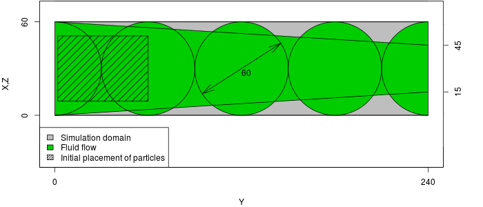

Particles in a Pipe
Warning
All these features related to particles are supported only in the particle branch
Case
The case consists of 5 balls of radious 30, placed along Y axis, connected by a narrowing cone, like on a picture:

The particles will be placed in the wide section, and driven by the force applied to the flow.
Geometry
We will use the OpenSCAD software to create the geometry. It will consist of four balls connected by a narrowing channel.
OpenSCAD
You can install OpenSCAD with:
sudo apt install openscad
The OpenSCAD allow us to create geometries with a script.
R=30;
D=60;
translate([R,0,R]) {
sphere(d=R*2);
for (x=[1:4]) {
translate([0,x*D,0]) {
sphere(d=R*2);
}
}
rotate([-90,0,0]) cylinder(h=8*R,r1=R,r2=R/2);
rotate([90,0,0]) cylinder(h=3*R,r1=R,r2=R);
translate([0,4*D,0]) rotate([-90,0,0]) cylinder(h=3*R,r1=R,r2=R);
}
You should get a geometry like this:
From OpenSCAD you can export into several file formats. Export an ASCII STL file "pipe_txt.stl". Sadly, it is rare for any software to support ASCII STL files (which is also the case with TCLB). To create both binary stl file and MSH file for ESYS-Particle with a util program provided with TCLB:
tools/stlutil -f pipe_txt.stl -o pipe.stl tools/stlutil -f pipe_txt.stl -o pipe.msh
ESYS-Particle simulation
Note
For installation of ESYS-Particle, please refer to the reference
Configuration
The ESYS-Particle is simulation is set up in a python script "pipe.py". At
the begining of the script we have to initialize the sim object:
from esys.lsm import * from esys.lsm.util import Vec3, BoundingBox from esys.lsm.geometry import * sim = LsmMpi(numWorkerProcesses=1, mpiDimList=[1,1,1]) sim.initNeighbourSearch( particleType="RotSphere", gridSpacing=38, verletDist=0.7 ) sim.setSpatialDomain( BoundingBox(Vec3(0,0,0), Vec3(64,240,64)), circDimList = [False, False, False] ) sim.setTimeStepSize(1) sim.setNumTimeSteps(10000)
First we read in the mesh:
sim.readMesh( fileName = "pipe.msh", meshName = "floor_mesh_wall" )
Then we add a set of particles, randomly packed in a rectangle:
geoRandomBlock = RandomBoxPacker( minRadius = 4.0000, maxRadius = 15.0000, cubicPackRadius = 11.0000, maxInsertFails = 1000, bBox = BoundingBox( Vec3(9.0000, 2.0000, 9.0000), Vec3(51.0000, 60.0000, 51.0000) ), circDimList = [False, False, False], tolerance = 1.0000e-05 ) geoRandomBlock.generate() geoRandomBlock_particles = geoRandomBlock.getSimpleSphereCollection() sim.createParticles(geoRandomBlock_particles)
We add friction interaction between particles:
normalK = 3; sim.createInteractionGroup ( RotFrictionPrms ( name = "friction", normalK = normalK, dynamicMu = 0.6, shearK = normalK/10.0, staticMu = 0.6, scaling = True ) )
and elastic interaction between particles and mesh wall:
sim.createInteractionGroup ( NRotElasticTriMeshPrms ( name = "floorWall_repell", meshName = "floor_mesh_wall", normalK = normalK ) )
To start up the movement we add a small acceleration ($10^{-5}$):
sim.createInteractionGroup ( GravityPrms ( name = "gravity", acceleration = Vec3(0.0000, 1e-5, 0.0000) ) )
To visualize the results, we add a check-pointer, which will write dump files:
sim.createCheckPointer ( CheckPointPrms ( fileNamePrefix = "flow_data", beginTimeStep = 0, endTimeStep = 20000, timeStepIncr = 100 ) )
Finnaly, we finish the "pipe.py" file with the execution of the simulation:
sim.run()
Running ESYS-Particle
We declared that we will use 1 worker process. ESYS works in a master-slave architecture, where master process is a python interpreter. That means that we need to run our simulation with two processes:
mpirun -np 2 esysparticle pipe.py
Post-Processing
To learn how to post-process results from ESYS-Particle please refer to another section of this manual
TCLB Simulation
The fluid flow simulation will be a simple periodic flow in a pipe with gravity force.
To run the example we will use the d3q27_cumulant_part model.
make -j 4 d3q27_cumulant_part
Compilation
For instructions on how to compile and run TCLB please refer to the Getting Started guide
Configuration
Like any TCLB configuration (pipe.xml) we start with declaring the output directory,
size of domain and initialize the domain with the collision operator:
<CLBConfig version="2.0" output="output/3D/"> <Geometry nx="64" ny="240" nz="64"> <MRT><Box/></MRT>
Now we can add our STL geometry. We want mark all elements outside of the
geometry with Wall elements (and switch off collision):
<Wall mask="ALL"> <STL file="pipe.stl" side="out"/> </Wall>
We now close the geometry element and begin to set up the simulation settings:
</Geometry> <Model> <Params ForceY="0.0001"/> <Params omega="1.0"/> </Model>
After that we have everything ready. We can declare what output we need and how many iterations we wan to execute:
<Failcheck Iterations="1000"/> <VTK/> <VTK Iterations="1000" what="U,Solid"/> <Solve Iterations="10000"/> </CLBConfig>
Running TCLB
If we are running on GPU, at this stage we can use a single GPU:
CLB/d3q27_cumulant_part/main pipe.xml
If you are running on CPU, it's probably best to use all the avaliable CPU cores:
mpirun -np 4 CLB/d3q27_cumulant_part/main pipe.xml
Results
In ParaView you can inspect the results. The initiali VTK drop includes all fields, which means that you can check if the boudaries are in the right places etc. You can also check what is the maximal velocity.
Combining TCLB and ESYS simulations
Configuration
To combine the two simulations we add the <RemoteForceInterface> element
to the configuration file (say pipe_dem.xml) to the <Model> container.
This will include our settings for the particle simulation:
<RemoteForceInterface Iterations="10000" particle="RotSphere" verletDist="0.7" gridSpacing="38"> sim.readMesh( fileName = "pipe.msh", meshName = "floor_mesh_wall" ) geoRandomBlock = RandomBoxPacker( minRadius = 4.0000, maxRadius = 15.0000, cubicPackRadius = 11.0000, maxInsertFails = 1000, bBox = BoundingBox( Vec3(9.0000, 2.0000, 9.0000), Vec3(51.0000, 60.0000, 51.0000) ), circDimList = [False, False, False], tolerance = 1.0000e-05 ) geoRandomBlock.generate() geoRandomBlock_particles = geoRandomBlock.getSimpleSphereCollection() sim.createParticles(geoRandomBlock_particles) sim.setParticleDensity ( tag = 0, mask = -1, Density = 2.0) normalK = 3; sim.createInteractionGroup ( RotFrictionPrms ( name = "friction", normalK = normalK, dynamicMu = 0.6, shearK = normalK/10.0, staticMu = 0.6, scaling = True ) ) sim.createInteractionGroup ( NRotElasticTriMeshPrms ( name = "floorWall_repell", meshName = "floor_mesh_wall", normalK = normalK ) ) sim.createInteractionGroup ( GravityPrms ( name = "gravity", acceleration = Vec3(0.0000, 1e-5, 0.0000) ) ) sim.createCheckPointer ( CheckPointPrms ( fileNamePrefix = "flow_data", beginTimeStep = 0, endTimeStep = 20000, timeStepIncr = 100 ) ) </RemoteForceInterface>
We deleted the now the gravity force acting on the particles, and rely only on the force applied to the fluid flow.
Running TCLB and ESYS
Our simulation is set up to be executed in a Spawning approach. This means that we will run TCLB, and TCLB will dynamically spawn ESYS-Particle code.
To say to MPI that we have a limited number of slots for process execution (cores), we need to create a hostfile:
localhost localhost localhost localhost
This hostfile is very simple, and just says that we have 4 avaliable slots on our computer (localhost). In a multi-computer setup (eg. cluster), we would specify all the nodes involved.
Now we can run TCLB with:
mpirun -hostfile hostfile -np 1 CLB/d3q27_cumulant_part/main pipe.xml
This will execute a single process of TCLB, which will in turn spawn 3
processes of ESYS (it will fill up the avaliable space). This means that it
will run a single master process and 2 worker processes. It will also
generate the Python setup file for ESYS, with appropriate division of the
domain and number of processes. You can inspect the generated file, which is
it output/pipe_ESYS.py.
MPMD
We can also run the case in a Multiple Program Multiple Data (MPMD) approach.
This means executing both programs at the same time. As ESYS is executed
immediately, we have to provide our own Python configuration file. In our
case, we can use the output/pipe_ESYS.py as the template.
To run the both codes we use the runmpi's MPMD syntax:
mpirun -np 1 CLB/d3q27_cumulant_part/main pipe.xml : -np 3 esysparticle pipe.py
As the configuration for ESYS is not generated we can delete all contents of
the <RemoteForceInterface> XML element (but we have to keep it, so that
TCLB knows we want to connect with ESYS.
Results
Both the fluid results and particle data can be loaded into ParaView. ParaView also reads stl files. The example results look like this: